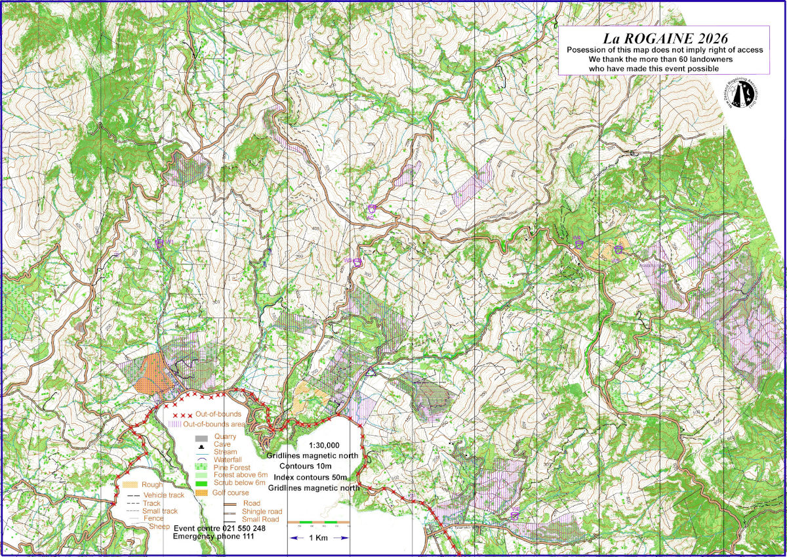
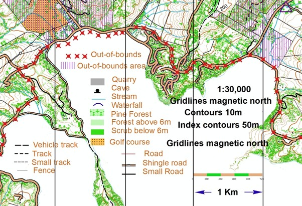

© Copyright 2025 NZRA
There is some lost property including a thumb compass and a soft flask. Please Click this Link to claim it.
There have been some adjustments to the 6 hour results affecting teams 72 & 77.
Event Centre
The event centre is on the corner of Robinsons Valley Road and Sawmill road, 100 metres up Sawmill Road. It is shown in the Legend map above.
There will be parking available on grass. You should assume that you will do your planning in your cars. There may be limited planning space available in the marquee, but this depends on numbers.
The Map
The map below is the actual rogaine map without the controls. It is created from LiDAR data, at a scale of 1:30,000, with 10 metre contours. It is oriented to magnetic north, with magnetic north gridlines at 1km spacing. It will be printed on 115 gsm A3 Teslin (waterproof and robust). Farm tracks have been marked where possible, but some may be faint on the ground, and others may exist. Fences have been taken from Topomap and may not be accurate.

Map Legend
PLEASE NOTE that the main Akaroa highway MUST NOT be walked along or crossed anywhere. There is an exception in Duvauchelle, as shown above, because there is a footpath. This stops about 50 metres short of Pipers Valley Road so extreme care must be taken in this area.

Control Descriptions
These will be descriptive rather than Orienteering style. The “A” and “THE” rogaining convention will be used where possible; “the” means it is marked on the map, “a” means it is not. They will be printed on the back of the map, and also on A4 plain paper.
Course Notes
You have been given the map in advance for several reasons – to ensure that you are familiar with the out-of-bounds areas, the restricted road, the event centre location, and to allow you to be familiar with the terrain to aid your planning on the day.
The event centre is marked by a triangle, at the corner of Robinsons Valley Road and Sawmill road, with the entry from Sawmill Road just past a bridge. There will be a flag at the Akaroa Highway-Robinsons Valley Road. The main parking area will have a marquee with a limited number of tables and chairs, so you should be prepared to plan in your cars if necessary. There will be a water hose available, but you should bring full water-bottles with you.
The start area will be at the marquee.
There is an historic schoolhouse on the opposite side of the road, and this will be used for Registration and map issuing and will also be the Finish area. For the 12-hour event, we will issue maps when you register. (6:30 onwards). You must register at this Admin building to receive your Navlight tags, and maps. We will issue maps with your registration for the 12-hour people.
You must bring your filled-out Indemnity form to register.
The main Akaroa Highway is marked with red crosses. You MUST NOT be on this highway, even on the verges, at any time. There is a lot of traffic, and blind bends. The exception is in Duvauchelles, where the “X”s have been moved off the road. You may use the footpath which exists there -but be VERY CAREFUL for the last 50 metres at the eastern end – the footpath stops. Other roads are usable but are open to the public, sometimes with a lot of traffic, so avoid walking along them, if possible, face oncoming traffic, and walk in single file. Dawbers Road on the eastern side of the course goes through an out-of-bounds area but is a public road which you can use.
The yellow dotted area in Duvauchelles is the golf course. Keep out.
There are two area marked with yellow dots. These have not been grazed and are passable but slow.
The vegetation is marked in two shades of green. The darker green is below 6m in height, and is assumed to be difficult, while the lighter green is higher and is assumed to be more open. However these are approximations, and you should use your judgement. Much of the native areas are navigable. There is Onga Onga (stinging nettle) in places both in the bush and on some tracks. We strongly recommend full-length gaiters, or trousers.
Be sure to bring a good first-aid kit. There are many barbed wire fences to cross. A one-metre length of pre-split hose is very handy. (Also, for electric fences).
Some tracks lead to private houses. Keep contact with the map and find a way to go round them. Waterdrop 5 is an exception, it is at a house, and you may request water from the person there.
You may find a temporary control marker (a small square piece of corflute with "temporary rogaine control” written on it) in places where there are no controls. Some controls have been relocated to a different spot; some temporary controls flew away. Please grab it and return it to the hash house.
There are many tracks and fences marked. We have tried to record these accurately where we can, but as usual, some may exist which are not mapped, and others which are mapped may not exist. Look for other evidence such as gullies, vegetation, compass direction etc. The tracks which are marked vary in quality from vehicle tracks to faint shelved and grassed tracks. The legend at the bottom of the map shows various track types. (One is called “sheep”. This suggests a feasible route that we have used.
The map covers a large area. Plan your day carefully, and do not over-estimate your ability.
There will be safety patrols starting at 11:00 am, 3:30 pm, and 7:45 pm. These will visit Water stops 1, 2, and 4, and will travel on Pipers Valley Road, the Summit Road from there to the south-east limit of the course above Control 90 (you can’t see it yet---), then return back along the Summit Road and down Okains Bay Road to the event centre.
Water drops – Your Control descriptions will have more detail about how to find the water drops.
Clothing – You will see the list of compulsory clothing in our rules. If it is an extremely hot day (unlikely!) we may relax the requirements a bit, but don’t assume that this will happen.
Remember to bring your own plates, mugs, and cutlery to the event.
Cancellation
We have avoided the worst of the rain which has hit the North Island. However, if there is massive local rainfall between now and the event, with an associated risk of slips, we must cancel the event. Watch the website.